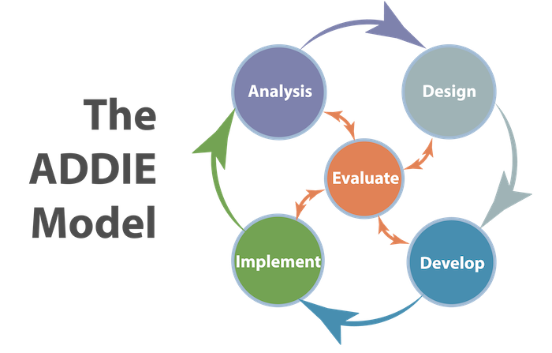

CEIT207 Design and Use of Instructional Material
This course highlights key implications of learning theories as they relate to the development of instructional materials. It covers a comprehensive range of instructional media types and formats, including audio, visual, audiovisual, and computer-based media. Additionally, the course equips participants with the foundational knowledge and practical skills needed for selecting, developing, and evaluating various instructional media.
- How to apply learning theories to the design and development of instructional materials.
- The characteristics, types, and formats of instructional media, including audio, visual, audiovisual, computer-based tools, and materials created using Microsoft Publisher.
- Practical skills for selecting, designing, and evaluating instructional materials to enhance learning outcomes.
- How to utilize the ASSURE model to systematically plan, develop, and evaluate instructional materials and reports.
Course Objectives
Learning Materials
Resources
- Applying the ASSURE Model for Beginners
- Microsoft Publisher Basics Tutorial by Teacher's Tech
- Udemy: Instructional Design for Beginners
- Coursera: Foundations of Instructional Planning with Models
- Educational Technology and Mobile Learning
- Microsoft Support: Publisher Help & Training
📍 Beginner
- Adobe for Education: Creative Tools in Teaching
- Creating Professional Documents in Microsoft Publisher
- Publisher Design Tips and Tricks by Simon Sez IT
- LinkedIn Learning: Instructional Design Essentials
- eLearning Industry
- Instructional Design Central
📍 Intermediate
- E-Learning Uncovered: Advanced Instructional Design
- EdTech: Emerging Trends in Education
- ActivePresenter Tutorials
- Advanced Applications of the ASSURE Model in Education
- Case Studies: Effective Use of the ASSURE Model
- Designing Publications for Education in Publisher
- Udemy: Mastering Instructional Design with ASSURE
- Learning Solutions Magazine
- Educause: Trends in Educational Media and Design
📍 Advanced
Roadmaps
Skills to Learn
- Apply the ASSURE model's basics using beginner-friendly tutorials.
- Use Microsoft Publisher for fundamental tasks, guided by tutorials like "Microsoft Publisher Basics" by Teacher's Tech.
- Understand instructional design fundamentals through courses such as Udemy’s "The Absolute Basics of Instructional Design."
- Learn foundational principles of instructional planning using Coursera’s "Foundations of Instructional Planning with Models."
- Develop professional-level documents in Microsoft Publisher using advanced formatting and design tips.
- Explore creative tools in Adobe for instructional material development, guided by resources like "Adobe for Education."
- Gain intermediate expertise in instructional design with LinkedIn Learning’s "Instructional Design Essentials."
- Apply visual design principles for engaging instructional media, using resources from eLearning Industry and Instructional Design Central.
- Master instructional design using Udemy’s "Mastering Instructional Design with ASSURE."
- Analyze case studies on the effective application of the ASSURE model.
- Explore emerging trends in educational media using Learning Solutions Magazine and Educause resources.
- Utilize advanced tools like ActivePresenter and design complex, multimedia-rich instructional materials.
- Lead projects involving innovative evaluation techniques for assessing instructional material outcomes.